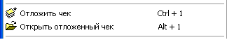

В процессе работы кассира на кассе, может
периодически возникать ситуация, когда текущий покупатель, которому уже
отсканировали/набрали товар в чек, не может немедленно рассчитаться,
например, ему нужно сходить в машину за деньгами, или он вспомнил, что не взял
какой-то важный для него товар, а в это время стоит очередь на кассу и
необходимо продолжать обслуживать следующих покупателей. В то же
время, покупки этого клиента уже упакованы и нецелесообразно
пересканировать их заново, особенно если он покупает много товарных
позиций. С целью решения данной проблемы, в программе есть возможность
как бы "отложить" этот чек в сторону, продолжить обслуживание следующих
покупателей, а когда вернется этот клиент, то восстановить содержимое его чека
и приняв оплату, сохранить чек в обычном порядке.

Последовательность действий:
Для того чтобы отложить чек нажмите сочетание
клавиш "Ctrl + 1" или выберите соответствующий пункт главного меню.
Появится подтверждающее сообщение, о том что чек
успешно отложен.
Для того чтобы открыть отложенный чек
нажмите сочетание клавиш "Alt + 1" или выберите соответствующий пункт главного
меню.
Чек восстановится, сообщение в случае успешного
восстановления не выдается.
Данная возможность по работе с отложенными чеками
по умолчанию отключена и задействовать ее можно на вкладке "Чек" в настройках
программы (смотрите соответствующий раздел справки).